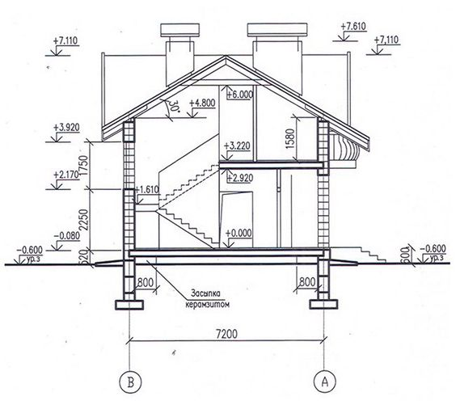
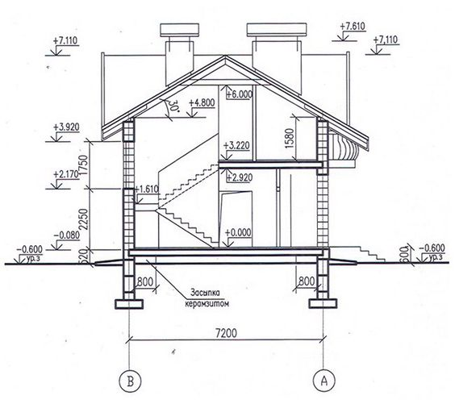

Perancangan Desain
Perancangan Desain adalah proses membuat gambar atau rancangan yang memperinci hal-hal seperti bentuk, ukuran, dan fungsionalitas suatu produk atau proyek. Dalam Hal ini, Barka Darutama melayani perancangan desain untuk gedung ( Rumah, Instansi Pemeritahan, Instansi Pendidikan, Rumah Sakit ) , Jembatan dan Peraian
 

Perhitungan Struktur
Perhitungan struktur adalah proses untuk menganalisis beban yang bekerja pada bangunan dan menghasilkan output berupa kebutuhan dimensi struktur , dalam hal ini perhitungan struktur dilakukan untuk menentukan dimensi balok , kolom , pondasi , dan kebutuhan penulangan , dalam hal ini juga dapat menentukan material yang dapat digunakan. Dalam Hal ini, Barka Darutama melayani perancangan desain untuk gedung (Rumah , Instansi Pemerintahan , Instansi Pendidikan dan rumah sakit) serta jembatan.
Layanan SLF
Sertifikat Layak Fungsi (SLF) adalah dokumen resmi yang dikeluarkan oleh pemerintah, biasanya melalui dinas atau badan terkait, yang menyatakan bahwa suatu bangunan telah memenuhi semua persyaratan teknis, keamanan, dan fungsional yang ditetapkan dalam peraturan perundang-undangan. SLF memastikan bahwa sebuah bangunan dapat digunakan sesuai dengan fungsinya dengan aman dan sesuai standar. Dalam Hal ini, Barka Darutama juga melayani layanan SLF (Sertifikat Layak Fungsi) untuk menyatakan bahwa bangunan yang telah selesai dibangun itu telah mencapai semua persyaratan
Pertelaan
Layanan Pertelaan ini mengacu pada pernyataan resmi yang dikeluarkan oleh pihak berwenang atau profesional terkait, yang menyatakan bahwa suatu bangunan atau struktur telah memenuhi standar dan ketentuan yang berlaku untuk fungsi atau penggunaannya. Ini mencakup berbagai aspek seperti keamanan, kenyamanan, dan kepatuhan terhadap peraturan. Dalam Hal ini, Barka Darutama juga melayani untuk proses layanan Pertelaan yang berfungsi untuk pernyataan bahwa suatu bangunan atau struktur yang akan dijalankan telah memenuhi standar dan ketentuan berlaku.